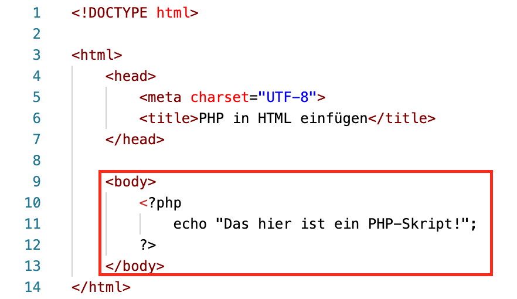
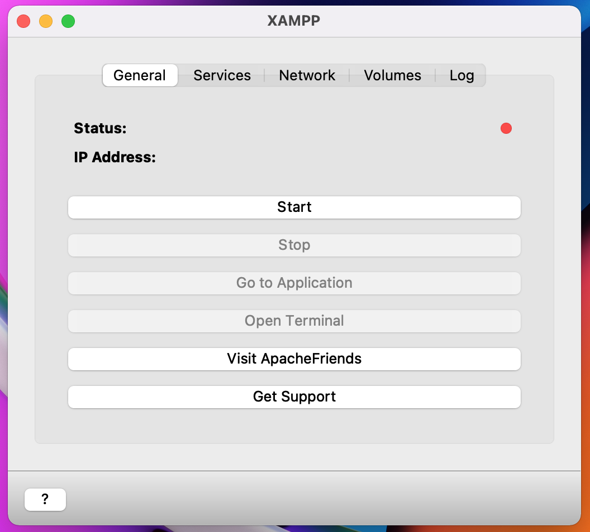
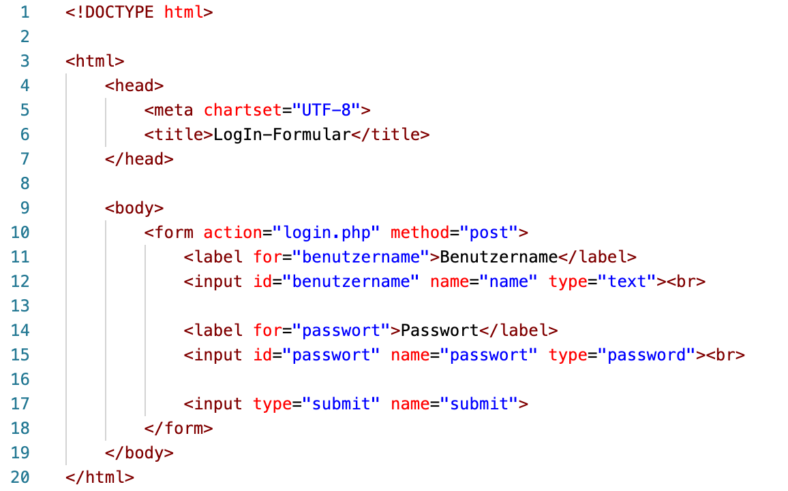
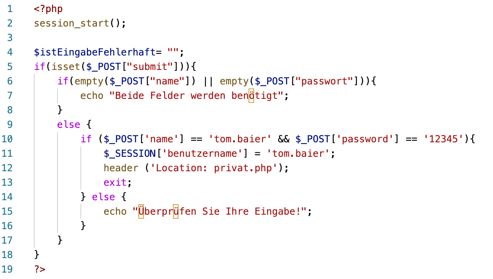
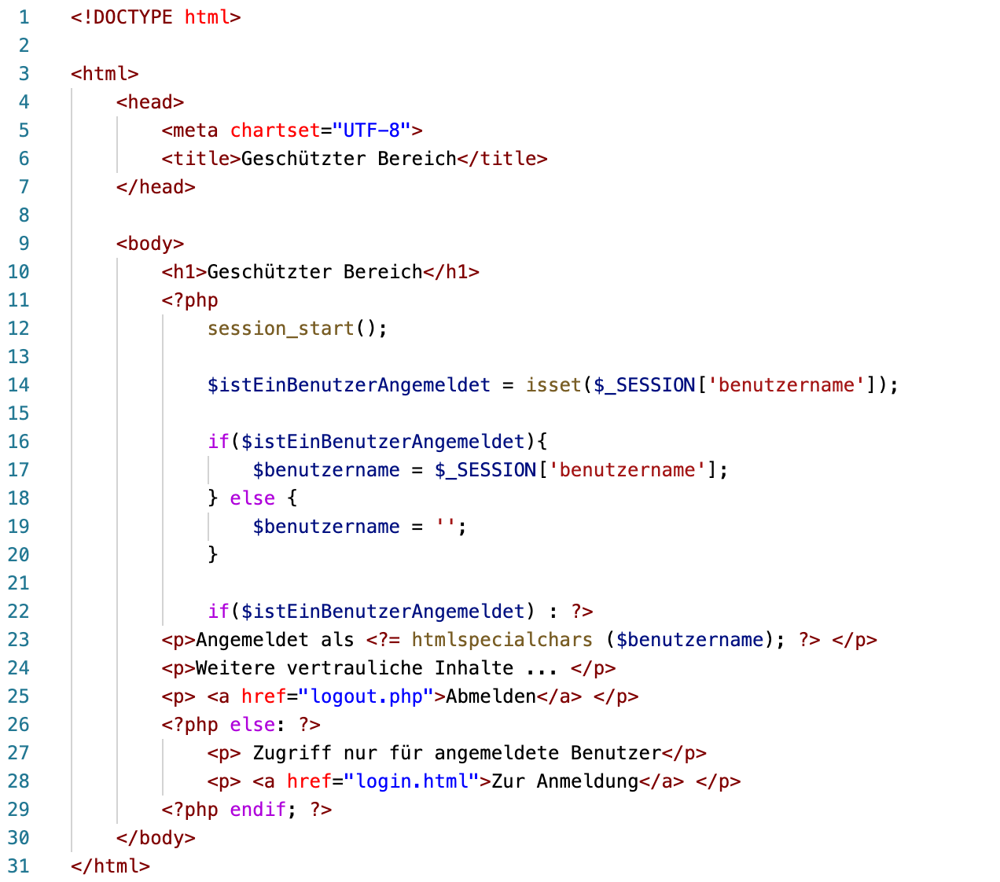
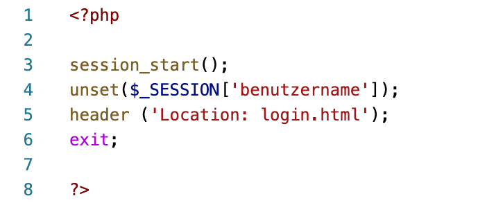
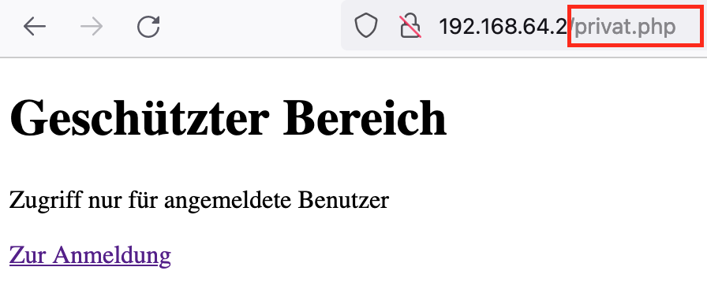
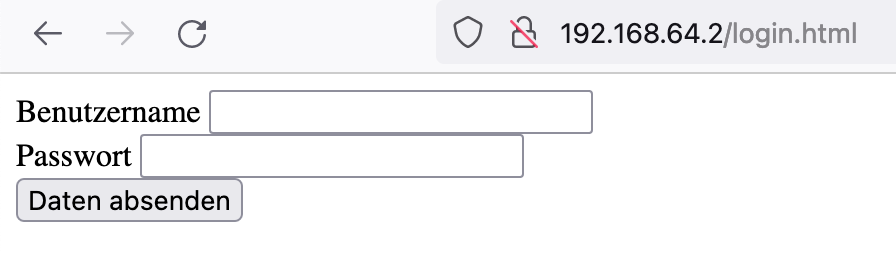
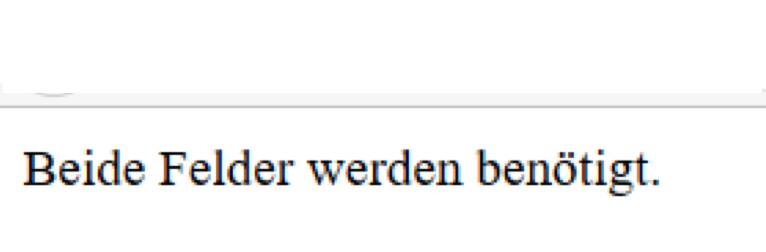

Das Thema oder zumindest der Begriff PHP sollte jedem, der sich ein wenig mit Webentwicklung auseinander gesetzt hat, bekannt sein. Dies ist auch bei mir der Fall. Vorallem die kurze Einführung zum Thema PHP in unserer letzten Vorlesung, machte PHP noch interessanter für mich, weshalb ich PHP als Vertiefungsthema der Vorlesung Webprogrammierung im dritten Semster behandeln möchte.
PHP ist ein rekursives Akronym für Hypertext Preprocessor. PHP beschäftigt sich mit der Seite des Servers und nimmt somit Anfragen, die clientseitig gestellt werden an, verabeitet diese und gibt eine Antwort zurück.

Wie sich in dem oberen Beispiel erkennen lässt, wird das öffnende PHP Tag noch in rot dargestellt. Dieses Problem ergibt sich, da bevor PHP genutzt werden kann, einige Vorkehrungen getroffen werden müssen. In den folgenden Abschnitten werde ich Ihnen erklären, was Sie für PHP benötigen und wie Sie PHP anschließend nutzen können.
Vorab ist hierbei anzumerken, dass ich privat das Betriebssystem MacOS nutze und ich deshalb auch die Installation und Konfiguration anhand dieses Betriebsystems erkläre. Falls Sie jedoch ein anderes Betriebssystem nutzen, können Sie sich auf dieser Seite umschauen. Dort wird die Installation und Konfiguration für andere Betriebssysteme beschrieben.
Für die Installation benötigen wir folgendes:
Dabei ist MySQL nicht nötig zur Verwendung von PHP, sondern eher optional. In dieser PHP Einführung werden wird deshalb auch nicht weiter auf MySQL eingehen. In der Praxis von großen Webanwednungen hingegen spielt eine Datenbank eine größere Rolle.
Apache ist ein lokaler Webserver, den wir zur Ausführung unseres PHP Codes benötigen. Zudem benötigen wir PHP um damit arbeiten zu können.
Ich habe mich hierbei für einen einfachen Installationsvorgang entschieden und zwar für den Donwload über ApacheFriens, den Sie uns auch in der Vorlesung emfohlen haben.
Nachdem Download und der Installation der MAMP Software, öffnet sich nun das ein Hinweisfenster, das darauf aufmerksam macht, dass es sich um den ersten Start handelt und das Programm initialisiert werden muss. Nachdem der Vorgang abgesschlossen ist öffnet sich dann das User Interface (UI) von XAMPP:

Hierbei sieht man dann zunächst den Status. Sthet dieser auf rot, so wird aktuell nichts ausgeführt. Der Server kann dann über den Start-Button gestartet werden. Der Status sollte sich dann auf gelb ändern, was bedeutet, dass der Server gestartet wird. Nach wenigen Sekunden sollte der Status dann grün sein was bedeutet, dass der Server einsatzbereit ist. Über die Menüleiste, wie im obigen Bild zu sehen, kann man dann auf den Punkt Services zugreifen. Dort den Apache auswählen und diesen ebenfalls starten. Nun ist unser lokaler Webserver bereit den PHP-Code auszuführen.
Um nun fortzufahren, öffnen wir den htdocs-Folder den die Installation von XAMPP mit sich bringt. Dort müssen die .php-Dokumente gespeichert werden, die wir mit dem lokalen Webserver ausführen möchten. Falls man diesen Folder nicht finden sollt gibt es dazu einen "Workaround", der so funktioniert: Über den Menüpunkt Volumes klickt man auf mount und danach auf explore. Somit gelangt man zu dem ordner lampp, der die htdocs-Folder enthält. Darüber kann man den Ordner öffnen und die PHP-Dateien einügen oder anlegen.
Wie wir bereits in den Vorleungen erfahren haben, eignet sich PHP sehr gut zum Erzeugen der Interaktivität zwischen Client und Server. Im folgenden habe ich ein kleines Login Formular erstellt, das die getätigte Eingabe des Nutzers überprüft und dementsprechend reagiert.

Der Code verteilt sich auf vier Dokumente: login.html, login.php, privat.php und logout.php. Die Codes der jeweiligen Datein sehen wie folgt aus:
Die login.html Datei definiert wie das login Formular aussehen soll und verweist innerhalb des form-Tags auf die Datei login.php.

Die PHP-Datei prüft, in der ersten inneren if-Schleife, ob Daten eingegeben wurden. Falls nicht wird eine Fehlermeldung mittels echo ausgegeben. Falls ja, dann wird nach in der else Bedingung geprüft ob die Eingabe richtig oder falsch war. Falls beide Eingaben korrekt sind, dann wird der Benutzer in einer SESSSION-Variable gespeichert und dann über den header und das exit zur privat.php-Seite weitergeleitet.

Auf dieser Seite wird nun geprüft ob der Nutzer angemeldet ist. Dazu betrachtet man die SESSSION-Variable (Zeile 14). Da dort zuvor der Benutzername gespeichert wurde, müsste man einen Benutzernamen zurückerhalten. Die Variable §benutzername erhält somit die Informationen der Session, in der der Benutzername gespeichert ist. Die else-Bedingung in Zeile 19 formuliert dabei, dass für den Fall eines nicht angemeldeten Nutzers, die Variable §benutzername leer bleibt. Die Ausgabe findet dann in Zeile 23 statt. Dabei wandelthtmlspecialchars() die für HTML spezifischen Zeichen um.

Die Logout-Datei übernimmt hierbei nur Funtkionen. Sie entfernt den Nutzer aus der Session und leitet ihn zu der Login Seite weiter. Zeile 4 geht dabei davon aus, dass in der Session der Benutzername steht. Über das Schlüsselwort unset wird der Benutzername gelöscht. Die zwei drauffolgenden Zeilen leiten den Nutzer dann zur Login-Seite zurück.
Zum Ausführen der Datei wird nun XAMPP benötigt, das wir vorhin gestartet haben. Über den Menüpunkt Go to application öffnet sich eine Seite im Browser. Um unsere geschriebene Anwendung nun auszuführen ersetzt man alles was nach dem / folgt durch privat.php. Dadurch öffnet sich die privat.php-Datei.

Wie der Screenshot zeigt muss man sich anmelden um die Seite nutzen zu können. Zum LogIn führt der Link Zur Anmeldung. Diese Seite sieht dann wie folgt aus:

Nach dem der Nutzer sich dann mit seinen Anmeldedaten auf der Seite angemeldet hat, kann via submit den geschützen Bereich betreten, vorausgesetzt seine Angaben sind korrekt, dies wird mittels des geschriebenen PHP-Codes geprüft. Ist dies nicht der Fall tritt die folgende Fehlermeldung, wenn die Felder nicht ausgefüllt sind:

Wenn die Anmeldung jedoch fehlerhaft ist, erscheint der Hinweis: Überprüfen Sie Ihre Eingaben.
Zusammenfassend soll dieses Beispiel verdeutlichen für was PHP eingesetzt werden kann. LogIn Formulare benötigt man heutzutage überall... Als Erweiterung könnte man nun eine Datenbank, zum Beispiel MySQL, verknüpfen die verschiedene User auf die Seite zugreifen lässt und ein Register-Formular für neue Nutzer erstellen.
Zur Erstellung des Vertiefungsthema habe ich mich auf diese Übung bezogen.